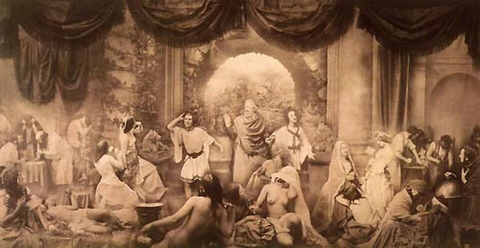
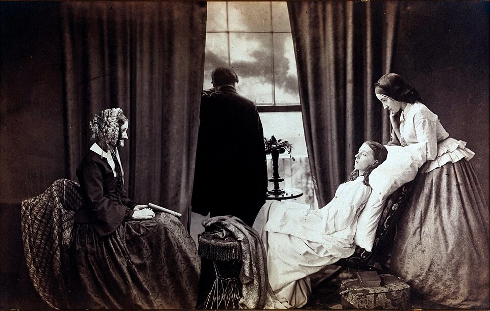
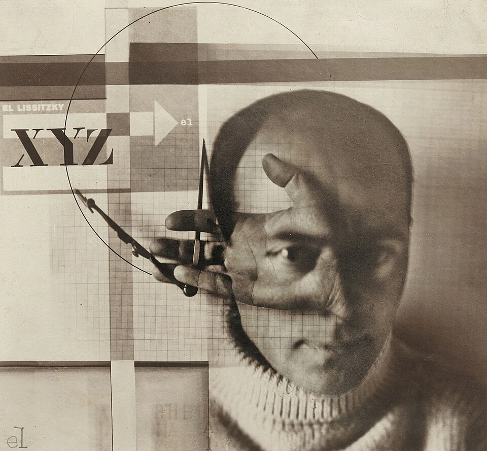
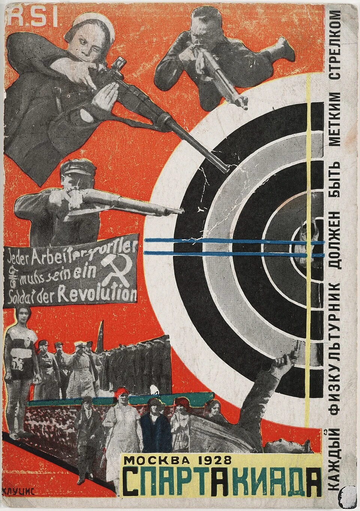

見どころ
何十人もが同じ場所に集まったように見える。人物と背景を別々に撮り、30枚を超えるネガを組み合わせた。写真を一枚の物語へ組み立てる、19世紀の先例。
作品・制作の例7件を紹介しています。実作品画像4点、参照・関連画像0点。画像の収集は継続中です。
技法・制作方法
Photomontage
別々の写真を切り取り、一つの画面に組み合わせます。すると、実際には出会っていない人や物が同じ場所に現れます。フォトモンタージュは、写真の組み合わせで新しい意味をつくる方法です。
実作品を見る

画像を表示できませんでした。下の出典ページで確認できます。
オスカー・グスタフ・レイランダー / 1857年
何十人もが同じ場所に集まったように見える。人物と背景を別々に撮り、30枚を超えるネガを組み合わせた。写真を一枚の物語へ組み立てる、19世紀の先例。
オスカー・グスタフ・レイランダー／Wikimedia Commons
出典で作品・資料を見る ↗実作品を見る

画像を表示できませんでした。下の出典ページで確認できます。
ヘンリー・ピーチ・ロビンソン / 1858年
病床を囲む人々と窓外の雲を、一つの場面として焼き付けた。素材は5枚のネガ。境目を目立たせない合成と、切り継ぎを際立たせる後の作品を比べられる。
ヘンリー・ピーチ・ロビンソン／ジョージ・イーストマン美術館／Wikimedia Commons
出典で作品・資料を見る ↗実作品を見る

画像を表示できませんでした。下の出典ページで確認できます。
エル・リシツキー / 1924年
コンパスを握る手と片目が重なり、定規の目盛りと文字が顔の前を横切る。「見る人」と「つくる人」を、別々の写真を重ねた一枚の自画像にした。
エル・リシツキー／クリスティーズ掲載のプリント／Wikimedia Commons
出典で作品・資料を見る ↗実作品を見る

画像を表示できませんでした。下の出典ページで確認できます。
グスタフ・クルーツィス / 1928年
右から大きく入り込む的の左側に、別々に撮った競技者を集めている。印刷した赤い色面が、写真ごとに違う向きや縮尺を一枚にまとめる。
グスタフ・クルーツィス／Tehne掲載の複製／Wikimedia Commons
出典で作品・資料を見る ↗実在する作品・制作物（個別の分野は domain を参照）
花びらの形と切り抜き画像の関係を見ます。
作品・資料の出典を見る ↗原題：Watched
ハンナ・ヘーヒ / 1925 / 切り貼りした印刷物
日本語の見出しは読みやすさのための呼び名・説明名です。原題は記録欄に示しています。
画像の転載条件は未確認。出典の公開は転載許諾ではありません。
実在する作品・制作物（個別の分野は domain を参照）
仮面、赤ちゃんの胴体、雑誌の目が組み合わされています。
作品・資料の出典を見る ↗原題：Aus der Sammlung: Aus einem ethnographischen Museum
ハンナ・ヘーヒ / 1929 / コラージュ・不透明水彩
日本語の見出しは読みやすさのための呼び名・説明名です。原題は記録欄に示しています。
画像の転載条件は未確認。出典の公開は転載許諾ではありません。
実在する作品・制作物（個別の分野は domain を参照）
印刷された紙の切り抜きに、金属箔（きんぞくはく。薄くのばした金属）も合わせています。異なる素材が、一人の姿に見えるように組み合わされています。
作品・資料の出典を見る ↗原題：Indian Dancer: From an Ethnographic Museum
ハンナ・ヘーヒ / 1930 / フォトモンタージュ・コラージュ
日本語の見出しは読みやすさのための呼び名・説明名です。原題は記録欄に示しています。
画像の転載条件は未確認。出典の公開は転載許諾ではありません。
組み合わせ印画
何十人もが同じ場所に集まったように見える。人物と背景を別々に撮り、30枚を超えるネガを組み合わせた。写真を一枚の物語へ組み立てる、19世紀の先例。
作品・資料の出典を見る ↗原題：The Two Ways of Life
オスカー・グスタフ・レイランダー / 1857年 / 組み合わせ印画
組み合わせ印画
病床を囲む人々と窓外の雲を、一つの場面として焼き付けた。素材は5枚のネガ。境目を目立たせない合成と、切り継ぎを際立たせる後の作品を比べられる。
作品・資料の出典を見る ↗原題：Fading Away
ヘンリー・ピーチ・ロビンソン / 1858年 / 組み合わせ印画
フォトモンタージュ
コンパスを握る手と片目が重なり、定規の目盛りと文字が顔の前を横切る。「見る人」と「つくる人」を、別々の写真を重ねた一枚の自画像にした。
作品・資料の出典を見る ↗原題：Self-Portrait (The Constructor)
エル・リシツキー / 1924年 / フォトモンタージュ
印刷絵はがき・フォトモンタージュ
右から大きく入り込む的の左側に、別々に撮った競技者を集めている。印刷した赤い色面が、写真ごとに違う向きや縮尺を一枚にまとめる。
作品・資料の出典を見る ↗原題：Postcard for the All-Union Spartakiada: Shooting
グスタフ・クルーツィス / 1928年 / 印刷絵はがき・フォトモンタージュ
ハンナ・ヘーヒは雑誌などの画像を使い、社会が女性をどう見ているか、といった問題を問い直しました。写真を組み合わせた画面全体が、実際の出来事を示すわけではありません。
元の写真の明るさの違いが、つなぎ目を目立たせることがあります。
切り抜きの文字には、もとの広告や記事の意味が残ることがあります。
顔と体の大きさが合っているか、切り口が残っているかを見ます。
画像の組み合わせが、笑いや疑問をどう生むか考えます。
コラージュは紙や布なども含む広い方法です。写真を中心に組み合わせる方法と重なる部分があります。
画像編集ソフトでも似た操作ができます。報道では、合成画像だと伝えることも大切です。
写真の切り抜きや合成で、別々の時間や場所を一枚に組み直した作品を集めました。
作品・制作の例7件を紹介しています。実作品画像4点、参照・関連画像0点。画像の収集は継続中です。